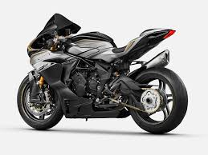
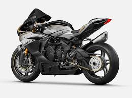
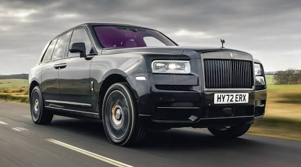
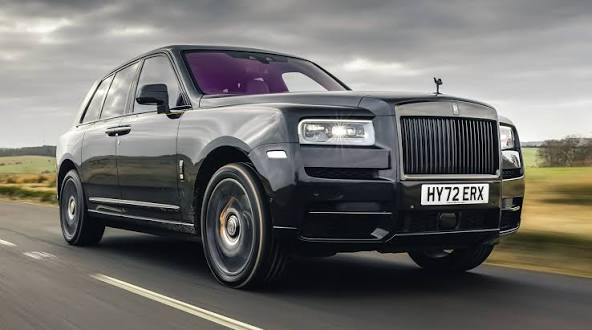

Welcome to Moto Mchines one of the best car shop in Kenya.We have many designs and models of your best likes. Sports bikes are not excluded. Fast moto machines available and ready for you to take it for a spin.
The machines are of good quality and designed by best engineers making them be approved by the mercideez benz company. Has low consumption of fuels and can move at a maximum speed of 220 km/h.
 

These are the fastest bikes you can have. They have a supper engine and unique life line and has a maximam speed limiy of 250km/h.All colors and designs available. They are performance-oriented motorcycles designed for speed, agility, and braking, featuring lightweight frames, powerful engines, and aerodynamic styling. Optimized for asphalt tracks and winding roads, they offer aggressive, forward-leaning riding positions, advanced suspension, and high-performance braking systems, with popular, high-speed models often derived from racing technology

Mercedes-Benz commonly referred to simply as Mercedes and occasionally as Benz, is a German automotive brand that was founded in 1926. Mercedes-Benz AG (a subsidiary of the Mercedes-Benz Group, established in 2019) is based in Stuttgart, Baden-Württemberg, Germany.[1] Mercedes-Benz AG manufactures luxury vehicles and light commercial vehicles, all branded under the Mercedes-Benz name. From November 2019 onwards, the production of Mercedes-Benz-branded heavy commercial vehicles (trucks and buses) has been managed by Daimler Truck, which separated from the Mercedes-Benz Group to form an independent entity at the end of 2021.
 

13 crazy facts about Rolls-Royce you probably didn't know ...Rolls-Royce Motor Cars is a premier British luxury automobile manufacturer founded in 1904 by Charles Rolls and Henry Royce. Owned by BMW since 2003, it operates from its headquarters in Goodwood, West Sussex, England, focusing on hand-built, bespoke luxury vehicles, producing around 5,000–6,000 cars annually. Famous models include the Phantom, Ghost, Cullinan, and Spectre